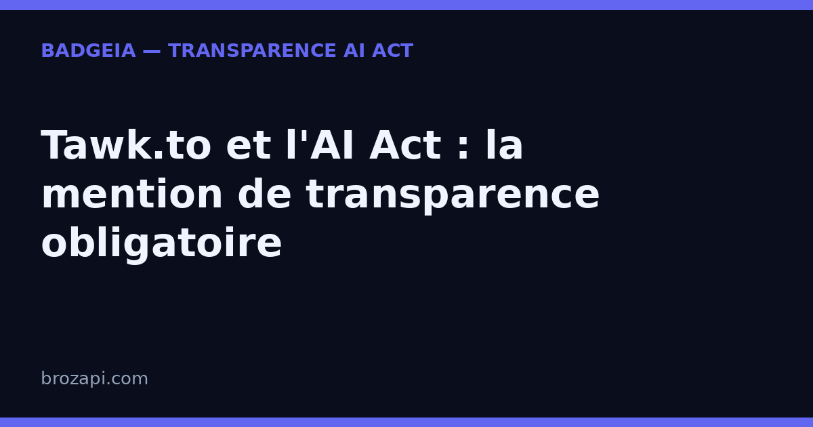

Tawk.to et l’AI Act : la mention de transparence obligatoire

Publié le · Mis à jour le 13 septembre 2026 · Lecture : 7 minutes
Vous utilisez Tawk.to sur votre site ? Le chat gratuit peut mettre vos visiteurs en relation avec votre équipe. Mais Tawk.to propose aussi des fonctions d’automatisation et un assistant IA appelé Apollo. Dès qu’un système d’IA échange directement avec une personne, la question de la transparence se pose.
L’article 50 du règlement européen sur l’intelligence artificielle (AI Act) s’applique à partir du 2 août 2026. Il prévoit que les personnes soient informées lorsqu’elles interagissent directement avec un système d’IA, sauf si cette nature est évidente dans le contexte. L’information doit être claire, distincte et donnée au plus tard au moment de la première interaction. [1][2]
Ce guide vous aide à distinguer le chat humain des réponses automatisées, à préparer le message d’accueil de Tawk.to et à vérifier ce que voit réellement un visiteur. Il ne remplace pas une analyse juridique de votre situation.
Tawk.to, chat humain ou assistant IA ?
Tawk.to est d’abord un widget de conversation. Dans sa configuration la plus simple, un visiteur écrit et un membre de votre équipe répond. Dans ce cas, le visiteur échange avec une personne, même si l’outil gère la fenêtre de chat, les notifications ou le routage.
La situation change lorsque vous activez une automatisation qui génère des réponses, ou lorsque vous déployez Apollo. La page officielle de Tawk.to présente Apollo comme un assistant IA capable de répondre dans le chat, de s’appuyer sur des sources de connaissance et de transférer une conversation à un humain. [3] Le visiteur peut alors recevoir une réponse produite par un système d’IA sans qu’un agent l’ait rédigée ou validée.
Le mot « gratuit » ne change rien à l’analyse. Ce qui compte est la manière dont le service fonctionne sur votre site : qui répond, à quel moment, et si une IA communique directement avec le visiteur.
Pourquoi l’article 50 peut concerner votre widget
L’article 50 vise les systèmes d’IA conçus pour interagir directement avec des personnes. La Commission européenne donne les chatbots et les agents d’IA comme exemples de systèmes concernés. Elle précise aussi que l’information doit être fournie de façon claire et distinguable, au plus tard lors de la première interaction. [1][2]
Un visiteur n’a pas à deviner si la réponse vient d’Apollo, d’un scénario automatique ou d’un agent humain. Le nom « Tawk.to », le prénom donné à votre assistant ou une icône de robot peuvent être utiles pour l’interface, mais ils ne disent pas forcément « vous échangez avec une IA ». Une phrase explicite est plus sûre et plus compréhensible.
La règle porte sur l’interaction visible par le visiteur. Si vos agents utilisent seulement un outil interne d’aide à la rédaction, puis relisent et envoient eux-mêmes leurs messages, cette situation n’est pas la même qu’un échange direct entre le visiteur et une IA. Il faut donc auditer le parcours réel, pas seulement la liste des fonctions activées dans votre abonnement.
Ce que la mention doit dire
Votre message n’a pas besoin de recopier le règlement. Il doit permettre à une personne raisonnablement attentive de comprendre immédiatement qu’elle parle à une intelligence artificielle. Placez-le avant ou dans la première réponse automatisée, dans une zone lisible sur ordinateur comme sur mobile.
Voici deux formulations à adapter :
- « Bonjour, je suis l’assistant virtuel de [votre entreprise], basé sur l’IA. Je peux vous aider immédiatement. Un membre de l’équipe peut prendre le relais. »
- « Vous échangez avec un assistant IA. Pour parler à une personne, demandez le transfert à un conseiller. »
Ne promettez un transfert humain que si quelqu’un peut effectivement reprendre la conversation. De même, ne présentez pas Apollo comme un agent humain, même si vous lui donnez un prénom. Une mention vague comme « réponse automatique » peut être insuffisante si le système génère réellement le contenu : dites clairement « assistant IA » ou une formule équivalente.
Comment configurer Tawk.to avec prudence
Les intitulés peuvent évoluer dans l’interface Tawk.to. Vérifiez les réglages disponibles dans votre compte et testez le parcours public après chaque modification. La logique de contrôle reste la même :
- Listez les points de réponse. Notez si le visiteur reçoit un message d’accueil, une réponse automatique, une réponse d’Apollo ou une réponse d’un agent humain.
- Annoncez l’IA au premier échange. Ajoutez la mention dans le message qui apparaît avant la première réponse produite par l’IA. Une information cachée dans une page d’aide ne remplace pas nécessairement cette annonce.
- Décrivez le relais humain honnêtement. Indiquez qu’un humain peut reprendre la conversation uniquement si le transfert est configuré et surveillé.
- Contrôlez les langues. Un site multilingue doit afficher un texte compréhensible dans la langue choisie par le visiteur, en pratique dès le message d’accueil correspondant.
- Testez comme un visiteur. Ouvrez une fenêtre privée, désactivez vos réflexes d’administrateur et vérifiez si la nature IA est évidente avant votre première question.
Conservez une capture de la configuration, le texte affiché, la date de mise en place et les pages concernées. Ce dossier peut vous aider à suivre vos changements. Il ne constitue pas, à lui seul, une preuve de conformité et l’article 50 n’impose pas le format de ce suivi.
Le badge sur le site complète-t-il le message du chat ?
Un badge de transparence visible sur les pages où votre assistant intervient peut compléter le message du widget. Il rappelle la présence d’une IA et offre un point d’information permanent. Mais il ne doit pas servir à cacher l’annonce au visiteur jusqu’à ce qu’il ouvre une page secondaire.
Le bon ordre est simple : annonce claire dans le chat dès la première interaction, puis éléments complémentaires sur le site et dans votre registre interne. Vérifiez aussi l’accessibilité du texte : contraste, taille, lecture mobile et compatibilité avec les outils d’assistance. L’article 50 demande que l’information soit fournie conformément aux exigences d’accessibilité applicables. [2]
Questions fréquentes sur Tawk.to et l’AI Act
Tawk.to est-il concerné même si je n’utilise que le chat gratuit ?
Le prix ne détermine pas l’obligation. Si le chat est traité par un humain, l’article 50 ne s’applique pas à cette interaction pour cette seule raison. Si une fonction d’IA échange directement avec le visiteur, examinez l’obligation de transparence, que l’outil soit gratuit ou payant.
Le nom Apollo suffit-il comme mention ?
Pas forcément. Un nom de produit ne permet pas toujours de comprendre qu’il s’agit d’une IA. Ajoutez une phrase explicite, par exemple « Vous échangez avec Apollo, l’assistant IA de [entreprise] ».
Dois-je signaler l’IA si un humain relit chaque réponse ?
La réponse dépend du parcours exact. Si le visiteur n’échange qu’avec votre agent humain, qui utilise l’IA comme aide interne, la situation diffère d’une réponse affichée directement par l’IA. Documentez ce fonctionnement et demandez un avis professionnel si la frontière est difficile à établir.
La mention doit-elle être en français ?
Elle doit être comprise par la personne concernée. Pour un site francophone, écrivez-la en français. Pour un site multilingue, adaptez le message à la langue de l’interface et du visiteur, au lieu de laisser une phrase anglaise incomprise.
BadgeIA garantit-il ma conformité ?
Non. Le kit BadgeIA (39 €) fournit un badge de transparence prêt à installer et un dossier de preuve horodaté. Le scanner peut vous aider à repérer une mention, mais BadgeIA ne constitue ni un conseil juridique ni une garantie de conformité.
Vérifiez votre site en 30 secondes
Notre scanner gratuit détecte Tawk.to sur votre site et vérifie la présence d’une mention de transparence. Le résultat vous donne un premier point de contrôle : il ne remplace pas le test du parcours complet avec Apollo, vos automatisations et vos agents.
Vérifier ma transparence AI Act
Cet article est fourni à titre informatif et ne constitue pas un conseil juridique. Les obligations dépendent notamment du système utilisé, du rôle de chaque acteur et du parcours effectivement proposé au visiteur.
Sources officielles
- AI Act Service Desk, article 50 : obligations de transparence.
- Commission européenne, FAQ sur les obligations de transparence de l’article 50.
- Tawk.to, présentation officielle de l’automatisation et des agents IA.
Pour aller plus loin : AI Act art. 50 : le guide complet · La checklist de conformité PME · Où afficher la mention de transparence IA
Guides par plateforme : Crisp · Intercom · Drift · HubSpot · LiveChat · Tidio · Zendesk